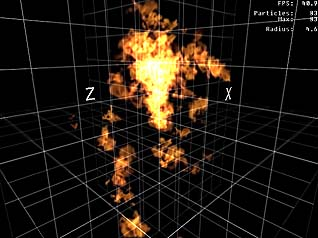
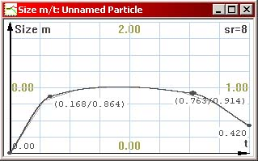
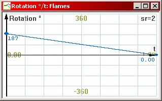
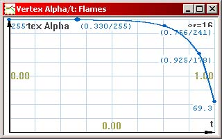
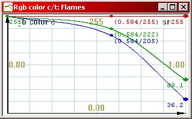
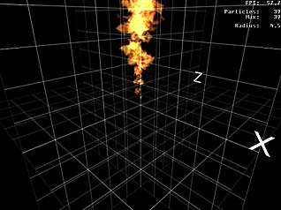
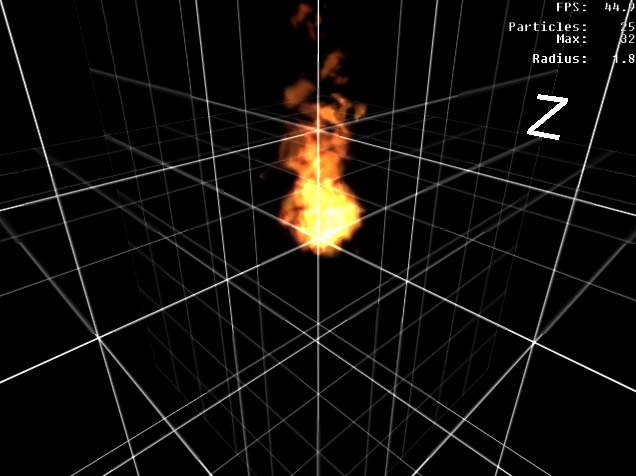
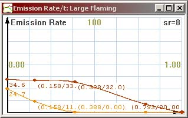
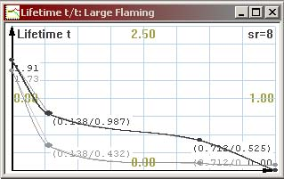
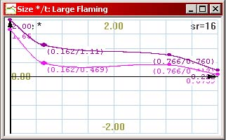

A Step-by-Step Tutorial
This section familiarizes you with
creating a particle effect from scratch with a step-by-step procedure. If
you’re already familiar with the process and need more specific
information, skip this section. Creating your own bitmaps and plugging
them into the particle editor is described later in this document. This
procedure uses the example bitmaps provided with the editor, and the
resulting effect is available as one of the example files (well,
almost...). But now, let’s get into the tutorial.
Creating a Fire Effect
Start ParticleFX and create a new effect by clicking the New
button. A new document window appears.
It’s handy to have something in the background of the preview
scene to see how large the effect is. Click the <none> button next
to “KF Scene”, and browse into the Examples \
Backgrounds directory. Select grid.txt and press OK. This puts a
translucent grid with 1 meter squares into the preview scene.
Now you need to create a Particle. Select “Particle”
from the selector under the “Element and Emitter properties”
then click the New button in the lower left corner of the window.
This creates a new Particle and opens the properties window for it.
The particle is named “Unnamed Particle” as default.
Change the name into something appropriate, like “Flames”.
First off, your particle needs a bitmap. Click the Import
button under “Particle Bitmaps”. A file browser opens. Go to
the “Bitmaps” directory under the directory where you’ve
installed ParticleFX, and open the bitmaps.txt file.
The bitmaps.txt file has several particle bitmaps plugged in. A
selector appears. Select the reelflames_additive one (the second
lowest in the list) and click OK. The “Reel Flames” are a set
of flame bitmaps captured from real flame footage. There are 6 sequences
in total, each consisting of a different number of bitmaps. (If there
are several “containers” in one particle bitmap set,
ParticleFX automatically randomizes between the bitmap sets. This gives
the particles variety. A particle effect can appear artificial if all the
particles look identical.)
OK, the particle now has a bitmap, so it can be previewed. Skip
this step and move to the next step if you can hold your curiosity for a
little while. However, if you can’t wait to see what the effect
looks like at this point, select Emitter from the Element and
Emitter properties then click the New button to create a new Particle
Emitter. After that, go to Emission Control, and click New to
create a new emission, select “Flames” and the emitter you
just created (“Unnamed Particle Emitter”) from the pop-up
window and press OK. Press F2 to view the effect. You see a
fountain of flame-like glowing, repetitively looping blobs spewing out of
the emitter. Doesn’t look like flames? Of course not. There’s
still a lot of tweaking to do. Close the preview by pressing F4.

This is what the results should look like with a flame bitmap and
default parameters applied
First off, you need to change some of the particle’s
properties. Go back to the Particles section of the Element and Emitter
properties, and double-click on the Flames particle to open it up.
Here’s what you need to do:
Change the Animation type to Lifetime.
The flame bitmaps consist of sequences where a few different flames die
away, so they should not loop.
-
Ignore the animation FPS and random
1st frame properties, as they only apply to looping bitmap
sequences.
-
Set the Particle Random Rotation
from –180 degrees to 180 degrees. This randomizes the
particles’ on-screen rotation by 360 degrees, giving the flames
further variety. Also check the Randomize rotation direction
checkbox.
-
Check the Random mirroring X and Y
checkboxes. The particle bitmaps will now be randomly mirrored by both
axes, to give further variety to the particles.
-
Flames tend to travel upwards. Change the
flame’s Gravity multiplier to –2.5. It’s a
good idea to use negative gravity instead of directed emission. This
ensures that the flames always travel upwards regardless of the
orientation of the emitter.
-
Change the Air Resistance (El.
Velocity) to Cubic. This increases the flames’ air
resistance when they gain velocity, preventing them from flying up way too
fast.
-
Change Air Resistance (El. Size)
to Linear. (With this particular effect though, the size-related
air resistance has little effect).
-
Set the Air Resistance Constant to
4. Flames should have a reasonable amount of air resistance.
Try previewing the effect now, and see what
happens. A tower of flames flying upwards. Looks better, but still not
quite there! Let’s do some further tweaking with the particle
before moving to the emitter. Click the Size Graph button, and
edit the graph to look something like this:

Since the graph is not very detailed, drop its sample rate to 8. The
graph dictates that the particles will start from zero size, then grow
up to size 1 (full size), and towards the end of their life cycle,
shrink a little.
Click the Rotation Graph button, and edit the graph to look
like this:

This makes the particles to rotate at a constant speed from –187
degrees to 0 degrees. The “Randomize Rotation Direction”
checkbox randomly flips this graph for different particles for variety (the
emitter’s Rotation Multiplier also affects the particles’
rotation, we’ll get into that later). Again, since the graph is
only a straight line, you can reduce its sample rate to 2.
Next, click the Vertex Alpha Graph and edit it to look like
this:

Because the flame bitmap sequences don’t have that many frames, this
helps to smooth out the last frames where the flame dies out.
Finally, click the RGB Color Graph button, and edit the
graph to look like this:

Just if you want to be fancy. This fades the flames’ color towards
red as they die out.
All right! You’ve created
a working flame particle! If you preview the effect now, it looks like a
flame tower, and it still leaves a lot to be desired:

You see, particles alone
don’t make the effect. The Emitter also needs to be tweaked
carefully, because the Emitter has a lot of influence on how the
particles behave.
Tweaking the emitter
The next thing to do is to start
tweaking the Emitter you created. Select Particle Emitter from
the Element and Emitter properties and double-click the “Unnamed
Particle Emitter” to open its properties window.
The emitter needs a better name. Change it to something
appropriate, like “Flaming”.
Since the flames travel upwards on their own, emission direction is
not needed at this time. Leave the Direction graph unedited (except
maybe dropping its sample rate to 2).
Just for the hell of it, also leave the Emission Random Velocity
graph as it is. As default, the flames get tiny random velocity
variation, but not much. Reduce the graph’s sample rate to 2.
Now let’s move to the Emitter Shape section. The flames
probably look best when emitted from a flat plane. Change the Geometry
under Emitter Shape to Square.
Set the minimum and maximum values for X to –0.15 and 0.15
meters. Leave the Y min and max values to 0. Set the minimum and maximum
values for Z to –0.15 and 0.15 meters. This creates a flat square 30
by 30 centimeter plane inside which all the particles are generated. The
origo of the effect is in the center of the plane.
The flame effect we’re working on is constant, and meant to
loop indefinitely. Set the Cycle length to 20 seconds, and edit the Emission Rate graph so that the upper graph is at roughly 80 and
the lower graph roughly at 10. This is easiest to do by dragging the
graphs up and down with the right mouse button. It doesn’t
matter which line is higher and which lower. Since the graphs are used
only for constant values this time (ie. horizontal lines), reduce
their sample rate to 2. The particle effect will now run for 20 seconds
after started, and emits 10 to 80 particles per time unit. Check the Cycle
Looping checkbox. Particle effects can be either looped by checking
this checkbox, or set to “looping” in the scripts (these
details will be covered in other documentation).
Edit the Element Lifetime Graph so that the upper line is
roughly at 1 and the lower line is roughly at 0.3. Again, drop the sample
rate to 2. As a result, the emitted particles will have a lifetime between
0.3 and 1 seconds throughout the 20-second cycle.
Edit the Size Multiplier Graph so that the upper line is
roughly at 0.9 and the lower line roughly at 0.4. The particles’
size will be randomized between 0.4 and 0.9 units throughout the cycle.
As with the above graphs, edit the Rotation Multiplier Graph
to 0.2 and 0.6. This way, some flames will rotate less, some more. A
rotation multiplier of 1 has no effect on the particle’s rotation
graph; values larger than 1 increase the rotation, and positive values
smaller than 1 reduce it.
Try previewing the flames. Looks
much better now, doesn’t it?

The example file provided is
actually a combination of two flame effects. The original emitter was
cloned with the Clone button and edited a little. The first emitter spews
smaller flames with a bit shorter lifetime, and the other one spews larger
flames with a longer lifetime. This was done to prevent the smallest
flames from flying too high up, which happens if you try to emit all
flames from one emitter with a lot of size variation. This can result in
very long-living, small flames if you’re not careful.
You may have noticed that the
example fire effect that came with ParticleFX also contains a pillar of
rising smoke. As an exercise, try to re-create the smoke from scratch.
Here’s some pointers:
- The
smoke bitmap provided with the example files is very bright in itself.
Use the Color Graph to darken it.
- Smoke
fades out smoothly. Ramp down the Vertex Alpha Graph. Since the smoke
bitmap is quite opaque, you can start the opacity graph at an already
low value and go down from there.
- Smoke
rises upwards, but slower than flames. Use a smaller negative gravity
multiplier.
- Smoke
clouds tend to live a lot longer than flames. Random Element Lifetime
from 2 to 5 seconds should be fine. Because of their long lifetime,
they should be emitted at a lower rate to prevent excessively dense
smoking.
Another interesting exercise
could be to change the fire effect into a fireball-style explosion. Change
the flame cycle’s length to 10 seconds, then give the Emission Rate,
Size and Lifetime graphs more resolution, and make the effect first emit a
lot of very large, long-living flames, then ramp the values down. As a
result, the fire should start with a blast, then burn away until the
flames go out. Here’s how to change the graphs:



|